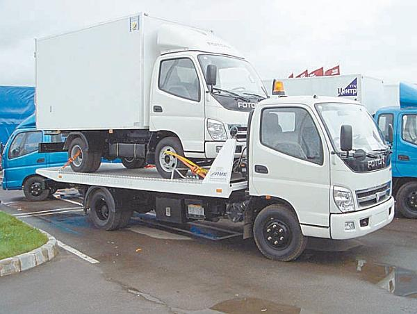

Принудительное задержание транспортных средств.
В настоящее время к нарушителям Правил дорожного движения довольно часто применяется такое средство воздействия, как принудительное задержание транспортного средства. Отметим, что в населенных пунктах это случается намного чаще, чем за городом.
На законном основании задержать автомобиль могут в случаях, если:
> транспортное средство эксплуатируется с заведомо неисправной тормозной системой (исключением является лишь стояночный тормоз), рулевым управлением либо сцепным устройством (если следует в составе автопоезда);
> транспортным средством управляет водитель, не имеющий при себе документов, предусмотренных Правилами дорожного движения;
> транспортным средством управляет водитель, не имеющий права управления транспортными средствами данной категории либо лишенный водительских прав;
> транспортным средством управляет водитель, находящийся в состоянии опьянения (алкогольного, наркотического или токсикологического);
> водитель транспортного средства отказывается подчиняться законному требованию работника милиции о прохождении медицинского освидетельствования на состояние опьянения;
> водитель транспортного средства нарушил правила остановки и стоянки на проезжей части, что повлекло за собой создание помех для движения других транспортных средств, либо совершил остановку транспортного средства в тоннеле.
В настоящее время среди юристов не утихают споры относительно того, насколько правомочна процедура задержания транспортного средства, и в частности применение эвакуаторов. Действительно, при желании можно найти противоречия в самых разных нормативных документах и законодательных актах.
Тем не менее факт остается фактом, и если вы нарушили Правила дорожного движения или к вам (вашему автомобилю) применим хоть один из перечисленных выше случаев, то ваша машина, вероятнее всего, будет принудительно задержана и доставлена на штрафную стоянку.
ПРИМЕЧАНИЕ
Специализированная штрафная стоянка должна иметь официальное разрешение на право проведения работ и оказания услуг по транспортировке и хранению задержанных транспортных средств и устав, согласованный с местным исполнительным органом власти. Месторасположение штрафной стоянки также определяет местный исполнительный орган власти, он же назначает организацию, которая уполномочена помещать задержанные транспортные средства на штрафную стоянку, хранить их там и выдавать владельцам либо их законным представителям в порядке, утвержденном действующим законодательством.
Далее давайте рассмотрим, каким образом следует себя вести в ситуациях, когда транспортное средство пытаются задержать в присутствии водителя и когда его увозят на эвакуаторе в отсутствие водителя.
Задержание транспортного средства в присутствии водителяЕсли работник ГИБДД в вашем присутствии принял решение задержать ваш автомобиль и отправить его на специализированную штрафную стоянку, он должен отстранить вас от управления и составить протокол о совершении административного правонарушения и протокол о задержании транспортного средства (при этом вам должны передать копии составленных документов, а также сообщить, по какому адресу будет находиться ваш автомобиль).
Однако это еще не все. Работник ГИБДД должен составить и приложить к протоколу опись имущества, которое в момент задержания имеется в автомобиле, а также подробное описание внешнего и внутреннего вида транспортного средства.
СОВЕТ
При составлении документов необходимо указать максимальное количество информации, вплоть до мельчайших подробностей. Например, важной будет информация о пробеге автомобиля (она имеется на спидометре), наличии аптечки, огнетушителя, обтекателей, спойлера, магнитолы, панорамных зеркал заднего вида, количестве топлива в баке и т. п. Перечислите характерные особенности автомобиля (рисунок на кузове, наличие фаркопа и т. п.). Помните, чем более информативными будут составленные документы, тем лучше для вас и тем проще потом будет доказывать свою правоту в случае возникновения непредвиденных обстоятельств.
Многие водители при задержании транспортного средства совершают одну и ту же ошибку: передают сотрудникам милиции ключи от своего автомобиля. Помните: по закону вы делать это не обязаны, чтобы вам ни говорили представители ГИБДД. Вы не должны оказывать содействие в задержании или аресте имущества, принадлежащего вам на праве личной собственности.
Более того, вы имеете полное право не разрешать работникам милиции садиться за руль вашего автомобиля. Учтите, что в соответствии с действующим законодательством они не отвечают за то, что ваша машина в процессе эвакуации будет невредима. Иначе говоря, если при доставке машины на штрафную стоянку находящийся за рулем работник милиции причинит ей ущерб (поцарапает, наскочит на бордюр и повредит подвеску или колесо и т. д.), то по закону он не будет нести за это никакой ответственности. В то же время ни в одном законе не сказано, что водитель обязан пустить работника милиции за руль своего автомобиля.
Поэтому настаивайте на том, чтобы ваш автомобиль доставляли на специализированную штрафную стоянку исключительно на эвакуаторе. Это ваше законное право.
СОВЕТ
Перед тем как ваш автомобиль погрузят на эвакуатор, рекомендуется забрать из него все более или менее ценное (дорогие инструменты, магнитолу, личные вещи). Впоследствии это сделать будет намного труднее, а оставлять в автомобиле – себе дороже.
Если вашу машину будут забирать на эвакуаторе, проследите за тем, чтобы в протоколе о задержании транспортного средства было указано, что различного рода вмятины, царапины, иные механические повреждения кузова отсутствуют, а сам автомобиль находится в технически исправном состоянии. Это позволит вам впоследствии требовать возмещения ущерба, если в процессе эвакуации или последующего хранения автомобилю будет причинен какой-либо вред.
Когда на место прибудет лицо, которое будет заниматься эвакуацией вашего автомобиля, потребуйте у него документы, подтверждающие право заниматься данным видом деятельности. Ну а затем необходимо составить акт приемки-передачи эвакуируемого транспортного средства.
Работник, который будет транспортировать ваш автомобиль, должен опечатать все места, которые конструктивно предназначены для доступа в транспортное средство. В первую очередь опечатать следует:
> двери;
> капот;
> багажник;
> крышку топливного бака;
> люк в крыше (при наличии такового).
После опечатывания попросите у работника ГИБДД, который производит задержание вашего автомобиля, расписаться на каждой пломбе (обычно это просто лист бумаги), наклеенной на автомобиль, и сами тоже распишитесь на них. Может возникнуть вопрос: зачем это нужно, если автомобиль опечатан в вашем присутствии?
Дело в том, что в соответствии с Правилами задержания транспортных средств опечатывать автомобиль должен работник, который будет осуществлять его транспортировку.
А теперь внимание! Имея на руках печати и пломбы, он впоследствии сможет в любой момент открыть ваш автомобиль, взять из него что угодно или наоборот – положить, затем вновь опечатать машину, разумеется, уже без вашего присутствия. Расписавшись же на пломбах, которыми опечатан автомобиль, и попросив сделать то же самое работника милиции, вы сможете оградить себя от подобных мошеннических действий. Если же этого не сделать, доказать что-либо впоследствии будет очень трудно, а чаще всего – бесполезно, так как с юридической точки зрения нарушения нет: машина была опечатана в вашем присутствии, а факт несанкционированного вскрытия еще доказать надо.
Не стоит забывать, что согласно действующему законодательству ответственность перед владельцем транспортного средства за законность действий, связанных с задержанием и сохранностью транспортного средства до передачи его представителю уполномоченной организации (по акту приема-передачи), несут работники милиции. После передачи ответственность возлагается на уполномоченную организацию.
Если вашу машину увез эвакуатор…В последние годы эвакуаторы как средство борьбы с нарушителями Правил дорожного движения приобретают все большую популярность. Многим нашим соотечественникам доводилось хвататься за сердце, когда они обнаруживали, что любимого четырехколесного коня нет там, где его оставили.
Бывают также ситуации, когда эвакуатор принудительно забирает автомобиль на штрафную стоянку в присутствии его водителя или хозяина, например если тот не имеет при себе документов, перечень которых определен Правилами дорожного движения. Однако самое большое возмущение у автомобилистов вызывает то, что машины забирают в их отсутствие. Обычно это случается при нарушении водителем правил остановки и стоянки транспортных средств. Рассмотрим указанные случаи более подробно.
Вначале давайте вспомним, в каких местах в соответствии с Правилами дорожного движения запрещены остановка и стоянка транспортных средств. Итак, остановка запрещается:
> на трамвайных путях, а также в непосредственной близости от них, если это создаст помехи движению трамваев;
> на железнодорожных переездах, в тоннелях, а также на эстакадах, мостах, путепроводах (если для движения в данном направлении имеется менее трех полос) и под ними;
> в местах, где расстояние между сплошной линией разметки (кроме обозначающей край проезжей части), разделительной полосой или противоположным краем проезжей части и остановившимся транспортным средством менее 3 метров;
> на пешеходных переходах и ближе 5 метров перед ними;
> на проезжей части вблизи опасных поворотов и выпуклых переломов продольного профиля дороги при видимости дороги менее 100 метров хотя бы в одном направлении;
> на пересечении проезжих частей и ближе 5 метров от края пересекаемой проезжей части, за исключением стороны напротив бокового проезда трехсторонних пересечений (перекрестков), имеющих сплошную линию разметки или разделительную полосу;
> ближе 15 метров от мест остановки маршрутных транспортных средств, обозначенных разметкой 1.17, а при ее отсутствии – от указателя места остановки маршрутных транспортных средств (кроме остановки для посадки или высадки пассажиров, если это не создаст помех движению маршрутных транспортных средств);
> в местах, где транспортное средство закроет от других водителей сигналы светофора, дорожные знаки, или сделает невозможным движение (въезд или выезд) других транспортных средств, или создаст помехи для движения пешеходов.
Стоянка транспортных средств запрещена там же, где и остановка, а также в следующих местах:
> вне населенных пунктов на проезжей части дорог, обозначенных знаком 2.1 «Главная дорога»;
> ближе 50 метров от железнодорожных переездов.
Остановившись или поставив свою машину на стоянку в запрещенном месте, не удивляйтесь (а также не пугайтесь), если потом не обнаружите ее: вероятнее всего, вы стали жертвой не угонщиков, а эвакуатора (рис. 3.15).

Рис. 3.15. Эвакуатор
При принудительном задержании и последующей эвакуации транспортного средства в отсутствие его водителя в присутствии двух понятых, в качестве которых, как правило, выступают обычные прохожие, должен составляться соответствующий протокол. Работник милиции, задержавший транспортное средство, должен немедленно сообщить об этом в дежурную часть местного РОВД, чтобы в максимально короткие сроки установить владельца либо законного представителя владельца задержанного автомобиля и сообщить ему об эвакуации его машины.
Поэтому, если вы не обнаружили свою машину там, где вы ее оставили, сразу звоните в дежурную часть местного РОВД, и, если ваш автомобиль был эвакуирован, вам скажут, по какому адресу вы сможете его найти.
Обязанность по оплате расходов на транспортировку принудительно задержанного транспортного средства, его хранению на специализированной штрафной стоянке полностью возлагается на его владельца либо законного представителя.
Для того чтобы получить в отделе ГИБДД копию протокола и постановления о задержании автомобиля, необходимо предъявить свидетельство о государственной регистрации транспортного средства, а также водительское удостоверение. В случае если вы не явля етесь хозяином машины, придется предъявить также либо доверенность на право управления этим автомобилем, либо путевой лист.